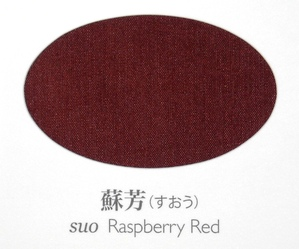

lo nenri be lo spati denmi
fi'e la .aktagaun.riunosuk.
sei la .guskant. cu fanva
ni'o
di'e fi lo poi lo pulji cu preti fo ke'a ku'o tricu katna se jibri cu lisri
.i tu'e
la'e po do di'u jetnu
.i
lo pu co'a sanji be lo va morsi xadni cu me mi je'u
.i
mi pu ki ta'e ca lo zi cerni tezu'e lo nu katna lebna lo trixe cmana ckunrsugito'i sa'a lo ckunrsugi cu du la'o ly Cryptomeria japonica ly toickunrsugi*1 cu klama
.i
ce'o co'a sanji lo nu ne'i lo cmana ctino ke spati denmi lo va morsi xadni cu zvati
.i
pau pei zvati ma kau
.i
la'a ri darno lo la .iamacnan. dargu la'u li ji'i vo ja mu tela'u lo gutcrtcouto'i sa'a pa gutcrtcou cu mitre li ji'i pa no so toigutcrtcou*2
.i
sei ne'i loi spatrtaketo'i sa'a lo spatrtake cu du la'o ly Arundinarieae ly noi tricu me la'o ly Bambusoideae ly gi'e xabju lo glare milxe foldi
sei tu'a la'o ly Arundinarieae ly bu'u la'o zoi Non-monophyly of the woody bamboos (Bambuseae; Poaceae): a multi-gene region phylogenetic analysis of Bambusoideae s.s.
Sarawood Sungkaew, Chris M. A. Stapleton, Nicolas Salamin and Trevor R. Hodkinson
Journal of Plant Research, 2009, Volume 122, Number 1, Pages 95-108 zoi se cusku toi
spatrtake*3 loi cinla ckunrsugi fe'e ru'inai zvati
va'o lo nu tu'a no prenu cu se ganse ku stuzi
.i
lo morsi xadni
va'o lo nu dasni lo blanrxanada
to'i sa'a sitna la'o py 太田 耕嗣 『源氏物語 千年の色: 単色』, 太田工芸, 京都, 2005 py toiblanrxanada*4 crekrsuikanu
to'i sa'a sitna la'o py 池上 良太 『図解 日本の装束』, 新紀元社, 東京, 2008 py toicrekrsuikanu jo'u mapkrxeboci*5 .e lo ke tcadu morna ke'e je cinje mapkrxeboci
to'i sa'a sitna la'o py 池上 良太 『図解 日本の装束』, 新紀元社, 東京, 2008 py toicrekrsuikanu jo'u mapkrxeboci*6 kei
sei lo betfu cu gapru
cu vreta
.i
ro bu'a zo'u gu
sei ku'i me pa po'o dakfu
lo cutne midju cu se tunta je se xrani
gi bu'a
.iseri'abo
loi morsi xadni jibni ke spatrtake ke farlu pezli cu nuknrsuxou
to'i sa'a sitna la'o py 太田 耕嗣 『源氏物語 千年の色: 単色』, 太田工芸, 京都, 2005 py toinuknrsuxou*7 cinta jinru pe'a
.i
na'i lo ciblu ba'o flecu
.i
lo xrani moklu pe'a ji'a cu sudga za'a
.i ji'a ba'anai
bu'u ri pa xirma sfanito'i sa'a lo xirma sfani cu sfani la'o ly Oestridae ly toixirma sfani*8 sei za'a vo'a lo mi cadzu sance na tirna
cu snipa je batci
.i
pau pei xu kau lo barda dakfu .a lo simsa na se viska
.i
na'i no da zvati
.i ku'i
ne'a ta bu'u lo ckunrsugi genja jibni lo skori cu pa mei ke vreta zvati
.i ji'a sei sa'a zi smaji
.i
ba'anai bu'o lo na'e skori ji'a no'u lo komcu cu pa mei zvati
.i
loi zvati be ne'a lo morsi xadni cu po'o me ri .e ra je re mei
.i ku'i
loi srasu .e loi spatrtake ke farlu pezli fe'e ru'i vi'a se stapa je se daspo
.i se ki'u bo ju'o
lo va nanmu pu lo nu se catra cu mutce carmi tolcando
.i
ki'a pau pei xu kau lo xirma na zvati
.i
ta je'u lo'e xirma na ka'e se nenri
.i ri'a sai bo
fe ta fi lo xirma klama dargu fa lo spati denmi pa mei cu bitmu
tu'u
{kind=link}
*1: to'i sa'a lo ckunrsugi cu du la'o ly Cryptomeria japonica ly toi
*2: to'i sa'a pa gutcrtcou cu mitre li ji'i pa no so toi
*3: to'i sa'a lo spatrtake cu du la'o ly Arundinarieae ly noi tricu me la'o ly Bambusoideae ly gi'e xabju lo glare milxe foldi sei tu'a la'o ly Arundinarieae ly bu'u la'o zoi Non-monophyly of the woody bamboos (Bambuseae; Poaceae): a multi-gene region phylogenetic analysis of Bambusoideae s.s. Sarawood Sungkaew, Chris M. A. Stapleton, Nicolas Salamin and Trevor R. Hodkinson Journal of Plant Research, 2009, Volume 122, Number 1, Pages 95-108 zoi se cusku toi
*4:
to'i sa'a sitna la'o py 太田 耕嗣 『源氏物語 千年の色: 単色』, 太田工芸, 京都, 2005 py toi
*5:
to'i sa'a sitna la'o py 池上 良太 『図解 日本の装束』, 新紀元社, 東京, 2008 py toi
*6:
to'i sa'a sitna la'o py 池上 良太 『図解 日本の装束』, 新紀元社, 東京, 2008 py toi
*7:
to'i sa'a sitna la'o py 太田 耕嗣 『源氏物語 千年の色: 単色』, 太田工芸, 京都, 2005 py toi
*8: to'i sa'a lo xirma sfani cu sfani la'o ly Oestridae ly toi